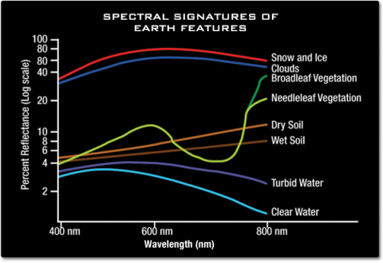

1.1 Overview
- Knowledge Review
- Practice
- Reflection
1.2 Knowledge Review
1.2.1 Mind map
1.2.2 What is Remote Sensing?

Remote sensing is the acquiring of information from a distance.By observing Earth and other planetary bodies via remote sensors on satellites and aircraft that detect and record reflected or emitted energy. Remote sensors, which provide a global perspective and a wealth of data about Earth systems, enable data-informed decision making based on the current and future state of our planet.
1.2.3 Satellite remote sensing
1.2.3.1 Landsat data
Satellites and sensors: The newest is Landsat 9, launched in 2021, and its predecessors include a series of successful satellites such as Landsat 7 and Landsat 8.
Image resolution: Landsat 8 and Landsat 9’s Operational Land Imager (OLI) and Thermal Infrared Sensor (TIRS) provide 30 metre multispectral resolution, 15 metre panchromatic resolution, and 100 metre thermal infrared resolution.
Revisit Cycle: Every 16 days for complete coverage of the Earth’s surface.
Data Availability: The Landsat project provides decades-long archived data, essential for scientific research and environmental monitoring.
1.2.3.2 Sentinel Data
Satellites and sensors: Includes multiple satellites such as Sentinel-1 (carrying Synthetic Aperture Radar, SAR), Sentinel-2 (carrying Multispectral Instrument) and several other satellites focussed on different missions.
Image resolution: Sentinel-2 provides multispectral data at 10, 20 and 60 metres resolution, superior to most Landsat data.
Revisit Cycle: Sentinel-2A and 2B can revisit the globe every 5 days, much faster than Landsat’s revisit cycle.
Data Availability: Sentinel data are available in real-time since launch, are easily accessible, and support near real-time applications.
1.2.4 Spectral features
Visible bands: Usually include blue, green and red bands, which are used to capture the colour and reflective properties of the ground surface and are commonly used for vegetation monitoring, land cover classification, etc.
Near infrared (NIR) band: Vegetation has high reflectance in this band and is commonly used for vegetation health assessment, vegetation type differentiation, etc.
Short-wave infrared band: Provides information on moisture status, vegetation type and fire scars.
Thermal infrared: mainly used for measuring surface temperature, thermal characterisation, and monitoring environmental moisture and drought conditions.
Mid-infrared band: helps to differentiate between different rock and soil types and can also be used to detect the presence of snow, ice and clouds.
